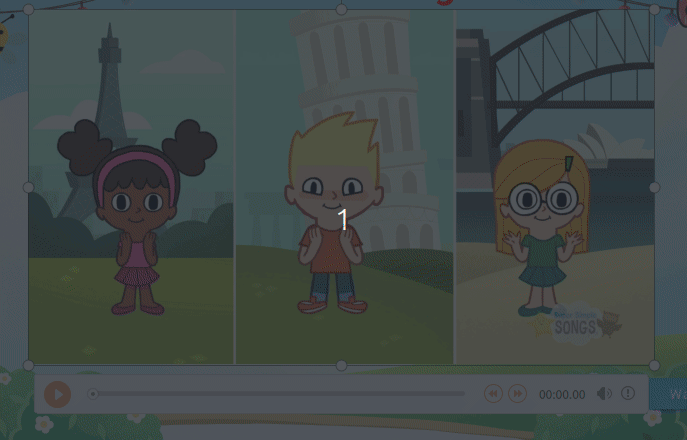
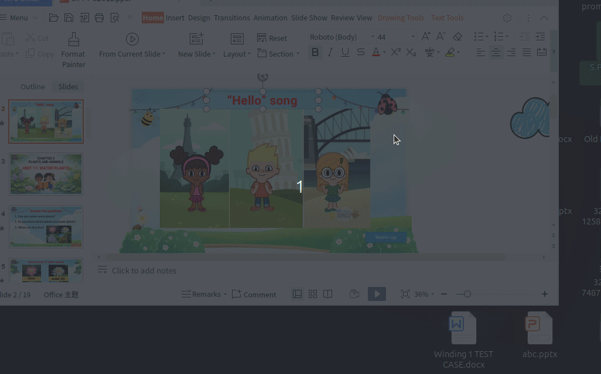
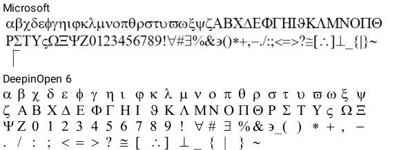
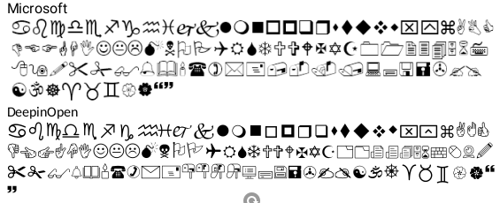
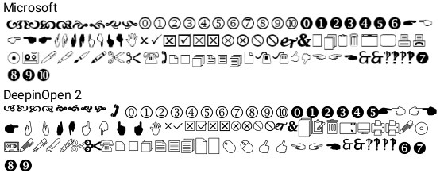
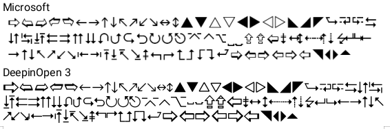
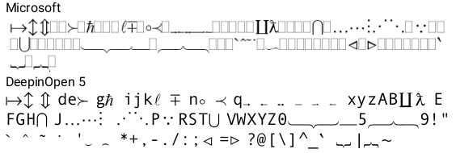
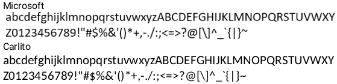
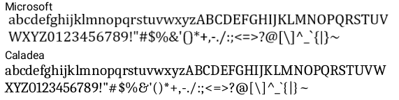

Link download file: https://github.com/tranhoangnam712/wps-bug-ubuntu-fonts/blob/main/fix-wps.sh
SOURCE CODE
#!/bin/bash
RED='\e[31m'
GREEN='\e[32m'
YELLOW='\e[33m'
RESET='\e[0m'
fake_metadata(){
local name="$1"
shift
echo -n "Forging ${name}..."
while [[ "$#" -gt 0 ]]; do
sudo sed -i "$1" "${name}.ttx" >/dev/null 2>&1
shift
done
sudo ttx -o "${name}.ttf" "${name}.ttx" >/dev/null 2>&1
echo -e " | ${GREEN}Success${RESET}"
}
handler(){
local RETRY_ATTEMP=3
local MSG="$1"
local CMD="$2"
local ERR_MSG="$3"
local SHOW_OUTPUT="$4"
local EXEC_CMD="$CMD"
if [[ -z "${SHOW_OUTPUT}" ]]; then
EXEC_CMD="$CMD >/dev/null 2>&1"
echo -n "${MSG}..."
else
echo "${MSG}..." # Prints normally with a newline so apt gets its own space
fi
while ! eval "$EXEC_CMD"; do
((RETRY_ATTEMP--))
echo -e "\n--- $CMD | ${RED}Failed${RESET}\nRetrying..."
if [[ "$RETRY_ATTEMP" -lt 1 ]];then
echo -e "${RED}${ERR_MSG}, exit in 3 seconds${RESET}"
sleep 3
exit 1
fi
sleep 3
done
echo -e " | ${GREEN}Success${RESET}"
return 0
}
sudo killall -9 wps >/dev/null 2>&1
sudo killall -9 wpp >/dev/null 2>&1
sudo killall -9 et >/dev/null 2>&1
sudo killall -9 wpspdf >/dev/null 2>&1
CURRENT_PATH=$(pwd)
handler "Running apt update" "sudo apt update" "Pls recheck your network connection"
handler "Downloading package" "sudo apt install curl wget git meson ninja-build build-essential fcitx5 fcitx5-unikey fcitx5-frontend-qt5 fcitx5-frontend-gtk3 jq -y" "Pls recheck your network connection"
handler "Downloading freetype2.13.0 source code" "sudo wget -q -O freetype-2.13.0.tar.xz https://sourceforge.net/projects/freetype/files/freetype2/2.13.0/freetype-2.13.0.tar.xz" "Cant access to https://sourceforge.net/projects/freetype/files/freetype2/2.13.0/freetype-2.13.0.tar.xz .Pls recheck your network connection"
sudo tar xf freetype-2.13.0.tar.xz --remove-files >/dev/null 2>&1
handler "Extracting latest verion number..." "sudo curl -Ls https://params.wps.com/api/map/web/newwpsapk?pttoken=newlinuxpackages" "Pls recheck your network connection"
URL_DOWNLOAD=$(sudo curl -Ls https://params.wps.com/api/map/web/newwpsapk?pttoken=newlinuxpackages | jq -r ".staticjs.website.wpsnewpackages.downloads" | base64 -d | jq -r ".linux_deb")
LATEST_VERSION="$(echo ${URL_DOWNLOAD}| grep -oE "[0-9]+\.[0-9]+\.[0-9]+\.[0-9]+")"
echo "Latest Version:${LATEST_VERSION}"
OPTION=0
if dpkg -s "wps-office" >/dev/null 2>&1 ;then
read -p "WPS already installed, do you want to reinstall(y/n):" REINSTALL
if [[ "$REINSTALL" == "y" ]]; then
handler "Deleting WPS" "sudo apt purge wps-office -y >/dev/null 2>&1 && sudo apt autoremove -y >/dev/null 2>&1" "Cant remove wps-office"
handler "Clearing all WPS cache and user data" "sudo rm -rf ~/.cache/Kingsoft ~/.config/Kingsoft ~/.local/share/Kingsoft /tmp/Kingsoft* /opt/kingsoft/wps-office" "Failed to clear WPS data"
else
OPTION=-1
fi
fi
if [[ "${OPTION}" -eq 0 ]];then
echo "Finding local wps deb..."
PATH_DEB=$(find ./ ~/Downloads ~/Desktop -maxdepth 1 -name "wps-office*.deb" 2>/dev/null)
readarray -t ITEMS <<<"$PATH_DEB"
NEW=()
for item in "${ITEMS[@]}"; do
if [[ "$(dpkg-deb -f "$item" Package 2> /dev/null)" == "wps-office" ]];then
NEW+=("${item}")
fi
done
NEW_VERSION=()
count=0
if [[ "${#NEW[@]}" -ge 1 ]];then
echo "Found ${#NEW[@]} wps deb file"
for item in "${NEW[@]}"; do
((count++))
CURRENT_VERSION=$(dpkg-deb -f "$item" Version 2> /dev/null | grep -oE "[0-9]+\.[0-9]+\.[0-9]+\.[0-9]+")
NEW_VERSION+=("${CURRENT_VERSION}")
echo "${count}===${CURRENT_VERSION} ${item}"
done
((count++))
if [[ "${#NEW[@]}" -eq 1 && "${CURRENT_VERSION[0]}" == "$LATEST_VERSION" ]];then
OPTION=1
else
echo "${count}===Download lastest version from internet"
read -p "Do you want to install by one of those local or install with latest version in internet(1-${count}):" OPTION
fi
else
OPTION=1
count=1
fi
while [[ "${OPTION}" -lt 1 || "${OPTION}" -gt "${count}" ]];do
read -p "Invalid option,pls retry:" OPTION
done
if [[ "${OPTION}" -eq "${count}" ]];then
handler "Downloading latest WPS from internet" "wget -q -O wps-${LATEST_VERSION}.deb ${URL_DOWNLOAD}" "Pls recheck your network connection"
DEB_FILE="./wps-${LATEST_VERSION}.deb"
else
DEB_FILE="${NEW[--OPTION]}"
fi
handler "Installing WPS-${LATEST_VERSION}" "sudo apt install ${DEB_FILE} -y" "Failed to install WPS" "show"
fi
echo "Fixing WPS bug"
cd freetype-2.13.0 >/dev/null 2>&1
handler "Compiling old version freetype" "meson setup build >/dev/null 2>&1 && meson compile -C build >/dev/null 2>&1" "Failed to compile freetype"
handler "Applying freetype to WPS" "sudo cp -a build/libfreetype.so* /opt/kingsoft/wps-office/office6/" "Applying failed"
cd "${CURRENT_PATH}" >/dev/null 2>&1
sudo rm -rf ./freetype-2.13.0 >/dev/null 2>&1
echo "Installing missing fonts"
handler "Install Roboto fonts" "sudo apt install fonts-roboto -y" "Pls recheck your network connection"
handler "Install Open Sans" "sudo apt install fonts-open-sans -y" "Pls recheck your network connection"
handler "Install Dejavu And Liberation2" "sudo apt install fonts-dejavu fonts-liberation2 -y" "Pls recheck your network connection"
echo -e "Personal:will applying fonts from microsoft and it violate copyright"
echo -e "Bussiness:will applying open source fonts.But cambria math fonts wont work"
read -p "Personal use(1) or Bussiness use(2):" OPTION
while [[ "$OPTION" != 1 && "$OPTION" != 2 ]];do
read -p "Invalid option,retry:" OPTION
done
sudo rm -rf /usr/share/fonts/truetype/microsoft >/dev/null 2>&1
sudo rm -rf /usr/share/fonts/truetype/open-source >/dev/null 2>&1
if [[ "$OPTION" -eq 1 ]]; then
sudo rm -rf ./wps-fonts >/dev/null 2>&1
sudo rm -rf ./Windows-10-Fonts-Default >/dev/null 2>&1
handler "Downloading microsoft fonts" "sudo git clone https://github.com/udoyen/wps-fonts.git >/dev/null 2>&1 && sudo git clone https://github.com/taveevut/Windows-10-Fonts-Default.git >/dev/null 2>&1" "Pls recheck your network connection"
sudo rm -f ./wps-fonts/wps/WEBDINGS.TTF >/dev/null 2>&1
sudo mv ./wps-fonts/wps/WINGDNG3.ttf ./wps-fonts/wps/wingding3.ttf >/dev/null 2>&1
sudo mv ./wps-fonts/wps/WINGDNG2.ttf ./wps-fonts/wps/wingding2.ttf >/dev/null 2>&1
handler "Creating folder" "sudo mkdir -p /usr/share/fonts/truetype/microsoft" "Failed to create folder"
handler "Applying fonts" "sudo mv ./wps-fonts/wps/* /usr/share/fonts/truetype/microsoft/ && sudo mv ./Windows-10-Fonts-Default/calibri.ttf /usr/share/fonts/truetype/microsoft/ && sudo mv ./Windows-10-Fonts-Default/calibrib.ttf /usr/share/fonts/truetype/microsoft/ && sudo mv ./Windows-10-Fonts-Default/calibrii.ttf /usr/share/fonts/truetype/microsoft/ && sudo mv ./Windows-10-Fonts-Default/calibriz.ttf /usr/share/fonts/truetype/microsoft/ && sudo mv ./Windows-10-Fonts-Default/calibril.ttf /usr/share/fonts/truetype/microsoft/ && sudo mv ./Windows-10-Fonts-Default/calibrili.ttf /usr/share/fonts/truetype/microsoft/ && sudo mv ./Windows-10-Fonts-Default/cambria.ttc /usr/share/fonts/truetype/microsoft/ && sudo mv ./Windows-10-Fonts-Default/cambriab.ttf /usr/share/fonts/truetype/microsoft/ && sudo mv ./Windows-10-Fonts-Default/cambriai.ttf /usr/share/fonts/truetype/microsoft/ && sudo mv ./Windows-10-Fonts-Default/cambriaz.ttf /usr/share/fonts/truetype/microsoft/" "Fonts apply failed"
sudo rm -rf ./wps-fonts >/dev/null 2>&1
sudo rm -rf ./Windows-10-Fonts-Default >/dev/null 2>&1
else
handler "Creating folder" "sudo mkdir -p /usr/share/fonts/truetype/open-source" "Failed to create folder"
handler "Installing fonttools" "sudo apt install fonttools -y" "Pls recheck your network connection"
handler "Downloading Deepin" "sudo wget -q -O ttf-deepin-opensymbol_2.2_all.deb https://tux.rainside.sk/deepin/apricot/pool/non-free/t/ttf-deepin-opensymbol/ttf-deepin-opensymbol_2.2_all.deb" "Pls recheck your network connection"
handler "Downloading Carlito(Replacement for Calibri)" "sudo apt install fonts-crosextra-carlito -y" "Pls recheck your network connection"
handler "Downloading Caladea(Replacement for Cambria)" "sudo apt install fonts-crosextra-caladea -y" "Pls recheck your network connection"
sudo dpkg-deb -x ttf-deepin-opensymbol_2.2_all.deb extracted_fonts >/dev/null 2>&1
sudo rm -f ./ttf-deepin-opensymbol_2.2_all.deb >/dev/null 2>&1
cd extracted_fonts/usr/share/fonts/truetype/deepin/ >/dev/null 2>&1
echo "Decompiling to XML..."
sudo ttx -o "wingding.ttx" DeepinOpenSymbol.ttf > /dev/null 2>&1
sudo ttx -o "wingding2.ttx" DeepinOpenSymbol2.ttf > /dev/null 2>&1
sudo ttx -o "wingding3.ttx" DeepinOpenSymbol3.ttf > /dev/null 2>&1
sudo ttx -o "mtextra.ttx" DeepinOpenSymbol5.ttf > /dev/null 2>&1
sudo ttx -o "symbol.ttx" DeepinOpenSymbol6.ttf > /dev/null 2>&1
sudo rm -rf ./*.ttf >/dev/null 2>&1
cd /usr/share/fonts/truetype/crosextra/ >/dev/null 2>&1
sudo ttx -o "calibri.ttx" Carlito-Regular.ttf > /dev/null 2>&1
sudo ttx -o "calibrib.ttx" Carlito-Bold.ttf > /dev/null 2>&1
sudo ttx -o "calibrii.ttx" Carlito-Italic.ttf > /dev/null 2>&1
sudo ttx -o "calibriz.ttx" Carlito-BoldItalic.ttf > /dev/null 2>&1
sudo ttx -o "cambria.ttx" Caladea-Regular.ttf > /dev/null 2>&1
sudo ttx -o "cambriab.ttx" Caladea-Bold.ttf > /dev/null 2>&1
sudo ttx -o "cambriai.ttx" Caladea-Italic.ttf > /dev/null 2>&1
sudo ttx -o "cambriaz.ttx" Caladea-BoldItalic.ttf > /dev/null 2>&1
sudo rm -rf ./*.ttf >/dev/null 2>&1
echo "Forging metadata to trick WPS"
cd "${CURRENT_PATH}/extracted_fonts/usr/share/fonts/truetype/deepin/" >/dev/null 2>&1
rules=("s/Deepin OpenSymbol Regular/Wingdings/g" "s/DeepinOpenSymbolRegular/Wingdings/g")
fake_metadata "wingding" "${rules[@]}"
rules=("s/Deepin OpenSymbol 2/Wingdings 2/g" "s/DeepinOpenSymbol2Regular/Wingdings2/g")
fake_metadata "wingding2" "${rules[@]}"
rules=("s/Deepin OpenSymbol 3/Wingdings 3/g" "s/DeepinOpenSymbol3Regular/Wingdings3/g")
fake_metadata "wingding3" "${rules[@]}"
rules=("s/Deepin OpenSymbol 5 Regular/MT Extra/g" "s/DeepinOpenSymbolRegular5/MTExtra/g")
fake_metadata "mtextra" "${rules[@]}"
rules=("s/Deepin OpenSymbol 6 Regular/Symbol/g" "s/DeepinOpenSymbolRegular6/Symbol/g")
fake_metadata "symbol" "${rules[@]}"
cd /usr/share/fonts/truetype/crosextra/ >/dev/null 2>&1
rules=("s/Carlito Regular/Calibri/g" "s/Carlito-Regular/Calibri/g" "s/Carlito/Calibri/g")
fake_metadata "calibri" "${rules[@]}"
rules=("s/Carlito Bold/Calibri Bold/g" "s/Carlito-Bold/Calibri-Bold/g" "s/Carlito/Calibri/g")
fake_metadata "calibrib" "${rules[@]}"
rules=("s/Carlito Italic/Calibri Italic/g" "s/Carlito-Italic/Calibri-Italic/g" "s/Carlito/Calibri/g")
fake_metadata "calibrii" "${rules[@]}"
rules=("s/Carlito Bold Italic/Calibri Bold Italic/g" "s/Carlito-BoldItalic/Calibri-BoldItalic/g" "s/Carlito/Calibri/g")
fake_metadata "calibriz" "${rules[@]}"
rules=("s/Caladea Regular/Cambria/g" "s/Caladea-Regular/Cambria/g" "s/Caladea/Cambria/g")
fake_metadata "cambria" "${rules[@]}"
rules=("s/Caladea Bold/Cambria Bold/g" "s/Caladea-Bold/Cambria-Bold/g" "s/Caladea/Cambria/g")
fake_metadata "cambriab" "${rules[@]}"
rules=("s/Caladea Italic/Cambria Italic/g" "s/Caladea-Italic/Cambria-Italic/g" "s/Caladea/Cambria/g")
fake_metadata "cambriai" "${rules[@]}"
rules=("s/Caladea Bold Italic/Cambria Bold Italic/g" "s/Caladea-BoldItalic/Cambria-BoldItalic/g" "s/Caladea/Cambria/g")
fake_metadata "cambriaz" "${rules[@]}"
handler "Applying fonts" "sudo mv ${CURRENT_PATH}/extracted_fonts/usr/share/fonts/truetype/deepin/*.ttf /usr/share/fonts/truetype/open-source/ && sudo mv /usr/share/fonts/truetype/crosextra/*.ttf /usr/share/fonts/truetype/open-source/" "Apply fonts failed"
cd "${CURRENT_PATH}" >/dev/null 2>&1
sudo rm -rf ./extracted_fonts >/dev/null 2>&1
sudo rm -rf /usr/share/fonts/truetype/crosextra >/dev/null 2>&1
sudo apt reinstall fonts-crosextra-carlito -y >/dev/null 2>&1
sudo apt reinstall fonts-crosextra-caladea -y >/dev/null 2>&1
sudo apt purge fonts-crosextra-carlito -y >/dev/null 2>&1
sudo apt purge fonts-crosextra-caladea -y >/dev/null 2>&1
sudo apt autoremove -y >/dev/null 2>&1
fi
handler "Reseting fonts cache" "sudo fc-cache -fvs >/dev/null 2>&1" "Failed to reset cache"
# read -p "Do you want to install fcitx5 and Unikey(y/n):" OPTION
# while [[ ! "${OPTION}" == "y" && ! "${OPTION}" == "n" ]];do
# read -p "Invalid option,retry:" OPTION
# done
# if [[ "${OPTION}" == "y" ]];then
# handler "Installing fcitx5 and Unikey" "im-config -n fcitx5 && echo -e \"\nexport GTK_IM_MODULE=fcitx\nexport QT_IM_MODULE=fcitx\nexport XMODIFIERS=@im=fcitx\" >> ~/.profile" "Applying fcitx5 and Unikey failed"
# fi
read -p "Completed,reboot now? y/n:" REBOOT
if [[ "${REBOOT}" == "y" ]];then
sudo reboot
fi
Hướng dẫn sử dụng
save code above into wps-fix.sh
Run
chmod 777 wps-fix.sh
./wps-fix.sh
Lưu ý, code này không sửa được hết bug ,còn 1 bug cần được sửa thủ công,đó là bug không chạy được video nhúng trên slide pptx.

Danh sách bug và cách sửa lỗi
1. Bug ko chạy được video nhúng trong pptx

Cách sửa:

2.Bug fonts rendering
Nguyên
nhân: do wps sử dụng thư viện freetype mới nhất nên bị lỗi khi rendering 1 số
fonts.Lỗi này xảy ra khi có font chữ không có được thiết kế font Bold ,và wps
phải fake bold .Những font chữ có thiết kế font Bold sẽ không bị. 
Cách sửa :
Downgrade thư viện freetype xuống phiên bản 2.13.0
Package cần thiết
sudo apt install meson ninja-build build-essential
Tải thư viện freetype và giải nén
sudo wget -q -O freetype-2.13.0.tar.xz https://sourceforge.net/projects/freetype/files/freetype2/2.13.0/freetype-2.13.0.tar.xz
sudo tar xf freetype-2.13.0.tar.xz
compile thư viện
cd freetype-2.13.0
meson setup build && meson compile -C build
thay thế file thư viện đó qua trong file system của wps
sudo cp -a build/libfreetype.so* /opt/kingsoft/wps-office/office6/
Các fonts chữ bị thiếu
Fonts bản quyền: Font open source thay thế:
Symbol -> Deepin Open Symbol 6
Wingdings -> Deepin Open Symbol
Wingdings 2 -> Deepin Open Symbol 2
Wingding 3 -> Deepin Open Symbol 3
MT Extra -> Deepin Open SYmbol 5
Calibri -> Carlito
Cambria -> Caladea
Fonts open source dùng chung cả 2 trường hợp:
Roboto
Open sans
Ưu điểm và nhược điểm:
|
|
Ưu điểm |
Nhược điểm |
|
Font bản quyền |
Mọi font chữ và kích thước đều giống như phiên bản của office |
Vi phạm bản quyền trừ khi laptop đó có bản quyền window |
|
Font open source |
Open source |
Fonts chữ và kích thước giống tới 90% .1 số font và ký tự có thể sẽ bị khác với phiên bản office .Cambria Math không có giải pháp open source .Nên 1 số ký tự toán của cambria math sẽ không hiển thị đúng . |
1. Cách cài đặt Fonts chữ bản quyền (Microsoft Fonts)
Cách này tải trực tiếp các font mặc định của Windows và copy vào hệ thống Linux.
Bash
# Tải font từ thư viện mã nguồn mở
gitclonehttps://github.com/udoyen/wps-fonts.git
gitclonehttps://github.com/taveevut/Windows-10-Fonts-Default.git
# Xử lý trùng lặp và đổi tên file đúng định dạng
rm -f ./wps-fonts/wps/WEBDINGS.TTFmv ./wps-fonts/wps/WINGDNG3.ttf ./wps-fonts/wps/wingding3.ttfmv ./wps-fonts/wps/WINGDNG2.ttf ./wps-fonts/wps/wingding2.ttf# Tạo thư mục chứa font(symbol,wingding ,wingding2 ,wingding 3 ,mt extra) và di chuyển file vào hệ thống
sudo mkdir -p /usr/share/fonts/truetype/microsoftsudo mv ./wps-fonts/wps/* /usr/share/fonts/truetype/microsoft/# Di chuyển các font phổ biến (Calibri, Cambria)
sudo mv ./Windows-10-Fonts-Default/calibri*.ttf /usr/share/fonts/truetype/microsoft/sudo mv ./Windows-10-Fonts-Default/cambria*.ttf /usr/share/fonts/truetype/microsoft/sudo mv ./Windows-10-Fonts-Default/cambria.ttc /usr/share/fonts/truetype/microsoft/# Cập nhật lại cache font của hệ thống
sudo fc-cache -fvs2.Cách cài font Open Source thay thế bản quyền
Bước 1: Khởi tạo môi trường và tải các công cụ hỗ trợ
Hệ thống cần cài đặt fonttools để xử lý biên dịch ngược font và các gói font mã
nguồn mở thay thế từ kho ứng dụng chính thức.
Bash
# Tạo thư mục lưu trữ font open-source trên hệ thống
sudo mkdir -p /usr/share/fonts/truetype/open-source
# Cài đặt công cụ biên dịch font và các font thay thế
(Carlito, Caladea)
sudo apt install fonttools fonts-crosextra-carlito
fonts-crosextra-caladea -y
# Tải gói font ký tự độc quyền từ Deepin và giải nén thủ
công
sudo wget -q -O ttf-deepin-opensymbol_2.2_all.deb
https://tux.rainside.sk/deepin/apricot/pool/non-free/t/ttf-deepin-opensymbol/ttf-deepin-opensymbol_2.2_all.deb
sudo dpkg-deb -x ttf-deepin-opensymbol_2.2_all.deb
extracted_fonts
# Xóa file cài đặt .deb sau khi đã giải nén xong
sudo rm -f ./ttf-deepin-opensymbol_2.2_all.deb
Bước 2: Dịch ngược và giả mạo Metadata cho các Font ký tự
Chuyển đổi toàn bộ 5 font ký tự từ thư mục
giải nén của Deepin sang định dạng cấu trúc XML (.ttx), thay đổi tên định danh bên trong cấu trúc file để
đánh lừa ứng dụng, sau đó đóng gói lại về định dạng .ttf.
cd extracted_fonts/usr/share/fonts/truetype/deepin/
# 1. Chuyển đổi toàn bộ định dạng TTF sang TTX (XML)
sudo ttx -o "wingding.ttx" DeepinOpenSymbol.ttf > /dev/null 2>&1
sudo ttx -o "wingding2.ttx" DeepinOpenSymbol2.ttf > /dev/null 2>&1
sudo ttx -o "wingding3.ttx" DeepinOpenSymbol3.ttf > /dev/null 2>&1
sudo ttx -o "mtextra.ttx" DeepinOpenSymbol5.ttf > /dev/null 2>&1
sudo ttx -o "symbol.ttx" DeepinOpenSymbol6.ttf > /dev/null 2>&1
# Xóa các file TTF gốc chưa chỉnh sửa
sudo rm -rf ./*.ttf
# 2. Tiến hành thay đổi tên định danh font (Font Forging) và đóng gói lại
# Xử lý Wingdings
sudo sed -i "s/Deepin OpenSymbol Regular/Wingdings/g; s/DeepinOpenSymbolRegular/Wingdings/g" wingding.ttx
sudo ttx -o wingding.ttf wingding.ttx
# Xử lý Wingdings 2
sudo sed -i "s/Deepin OpenSymbol 2/Wingdings 2/g; s/DeepinOpenSymbol2Regular/Wingdings2/g" wingding2.ttx
sudo ttx -o wingding2.ttf wingding2.ttx
# Xử lý Wingdings 3
sudo sed -i "s/Deepin OpenSymbol 3/Wingdings 3/g; s/DeepinOpenSymbol3Regular/Wingdings3/g" wingding3.ttx
sudo ttx -o wingding3.ttf wingding3.ttx
# Xử lý MT Extra
sudo sed -i "s/Deepin OpenSymbol 5 Regular/MT Extra/g; s/DeepinOpenSymbolRegular5/MTExtra/g" mtextra.ttx
sudo ttx -o mtextra.ttf mtextra.ttx
# Xử lý Symbol
sudo sed -i "s/Deepin OpenSymbol 6 Regular/Symbol/g; s/DeepinOpenSymbolRegular6/Symbol/g" symbol.ttx
sudo ttx -o symbol.ttf symbol.ttx
# Di chuyển các font ký tự đã mod thành công vào thư mục open-source
sudo mv ./*.ttf /usr/share/fonts/truetype/open-source/
Bước 3: Dịch ngược và đổi tên các Font văn bản chính (Carlito -> Calibri, Caladea -> Cambria)
Chuyển đổi toàn bộ các biến thể (Regular, Bold, Italic, BoldItalic) của font văn bản chuẩn trong hệ thống để thực hiện tráo đổi định danh cấu trúc.
cd /usr/share/fonts/truetype/crosextra/
# 1. Chuyển đổi toàn bộ định dạng TTF sang TTX (XML)
sudo ttx -o "calibri.ttx" Carlito-Regular.ttf > /dev/null 2>&1
sudo ttx -o "calibrib.ttx" Carlito-Bold.ttf > /dev/null 2>&1
sudo ttx -o "calibrii.ttx" Carlito-Italic.ttf > /dev/null 2>&1
sudo ttx -o "calibriz.ttx" Carlito-BoldItalic.ttf > /dev/null 2>&1
sudo ttx -o "cambria.ttx" Caladea-Regular.ttf > /dev/null 2>&1
sudo ttx -o "cambriab.ttx" Caladea-Bold.ttf > /dev/null 2>&1
sudo ttx -o "cambriai.ttx" Caladea-Italic.ttf > /dev/null 2>&1
sudo ttx -o "cambriaz.ttx" Caladea-BoldItalic.ttf > /dev/null 2>&1
# Xóa các file TTF nguyên bản trong thư mục hiện hành
sudo rm -rf ./*.ttf
# 2. Xử lý sửa metadata và biên dịch lại cho nhóm font Calibri (Carlito)
sudo sed -i "s/Carlito Regular/Calibri/g; s/Carlito-Regular/Calibri/g; s/Carlito/Calibri/g" calibri.ttx
sudo ttx -o calibri.ttf calibri.ttx
sudo sed -i "s/Carlito Bold/Calibri Bold/g; s/Carlito-Bold/Calibri-Bold/g; s/Carlito/Calibri/g" calibrib.ttx
sudo ttx -o calibrib.ttf calibrib.ttx
sudo sed -i "s/Carlito Italic/Calibri Italic/g; s/Carlito-Italic/Calibri-Italic/g; s/Carlito/Calibri/g" calibrii.ttx
sudo ttx -o calibrii.ttf calibrii.ttx
sudo sed -i "s/Carlito Bold Italic/Calibri Bold Italic/g; s/Carlito-BoldItalic/Calibri-BoldItalic/g; s/Carlito/Calibri/g" calibriz.ttx
sudo ttx -o calibriz.ttf calibriz.ttx
# 3. Xử lý sửa metadata và biên dịch lại cho nhóm font Cambria (Caladea)
sudo sed -i "s/Caladea Regular/Cambria/g; s/Caladea-Regular/Cambria/g; s/Caladea/Cambria/g" cambria.ttx
sudo ttx -o cambria.ttf cambria.ttx
sudo sed -i "s/Caladea Bold/Cambria Bold/g; s/Caladea-Bold/Cambria-Bold/g; s/Caladea/Cambria/g" cambriab.ttx
sudo ttx -o cambriab.ttf cambriab.ttx
sudo sed -i "s/Caladea Italic/Cambria Italic/g; s/Caladea-Italic/Cambria-Italic/g; s/Caladea/Cambria/g" cambriai.ttx
sudo ttx -o cambriai.ttf cambriai.ttx
sudo sed -i "s/Caladea Bold Italic/Cambria Bold Italic/g; s/Caladea-BoldItalic/Cambria-BoldItalic/g; s/Caladea/Cambria/g" cambriaz.ttx
sudo ttx -o cambriaz.ttf cambriaz.ttx
# 4. Di chuyển toàn bộ font văn bản đã xử lý sang thư mục mục tiêu
sudo mv /usr/share/fonts/truetype/crosextra/*.ttf /usr/share/fonts/truetype/open-source/
3.cài đặt fonts open source dùng chung cho cả 2 trường hợp
Có 4 fonts nổi tiếng open source nhưng Ubuntu không tự cài sẵn,nên mình phải cài ,cho dù là trường hợp bản quyền hay open source thế bản quyền.
Install Roboto fonts
sudo apt install fonts-roboto
Install Open Sans
sudo apt install fonts-open-sans
Install Dejavu And Liberation2
sudo apt install fonts-dejavu fonts-liberation2
Sự khác nhau giữa bản quyền và open source
Open
source hầu như chạy chính xác 90% so với fonts bản quyền.
Một số ký tự hoặc ký hiệu sẽ có hình dạng khác 1 chút ,nhưng vẫn cùng 1 ý nghĩa
,cùng kích thước.
Chỉ có Fonts Cambria Math không có phiên bản open source thay thế
Font Symbol:

Font Wingdings

Font Wingdings 2

Font Wingdings 3

MT Extra

Calibri

